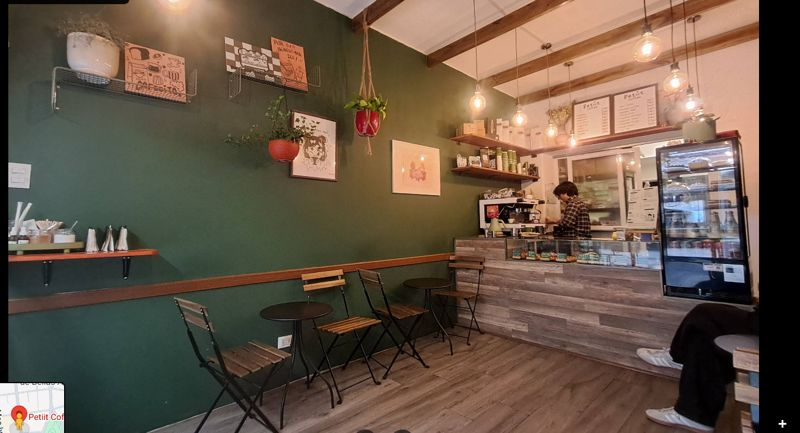
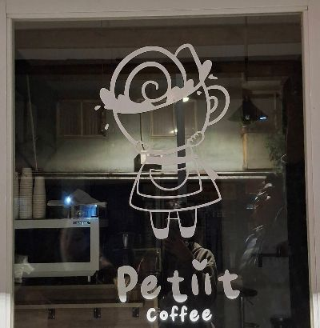
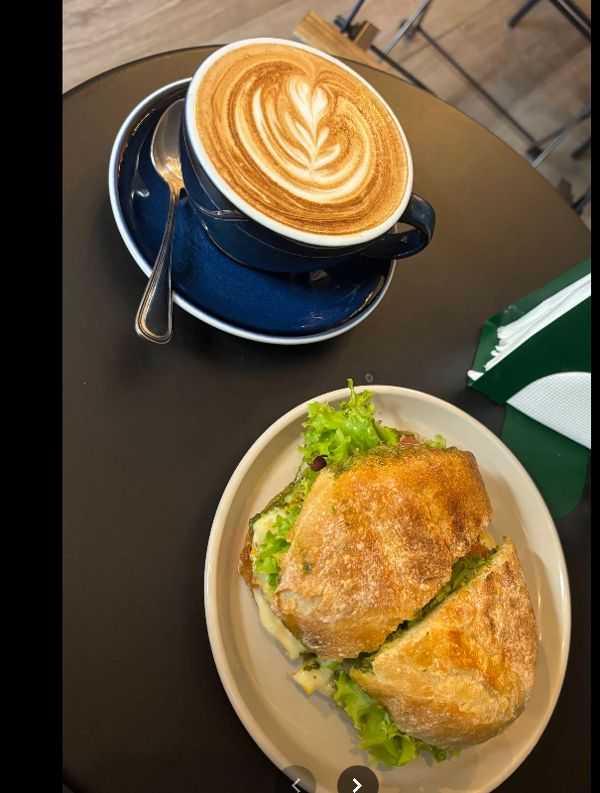
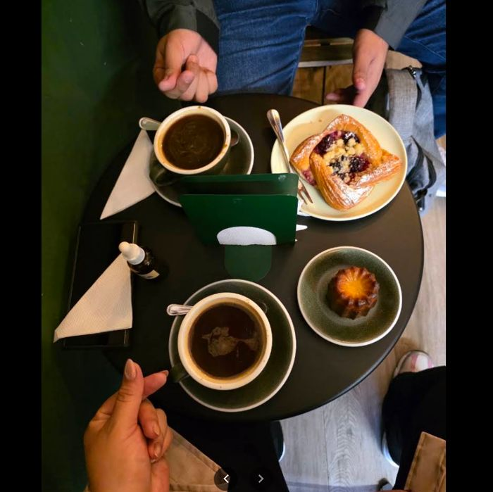
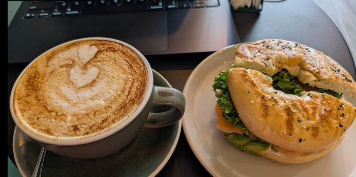
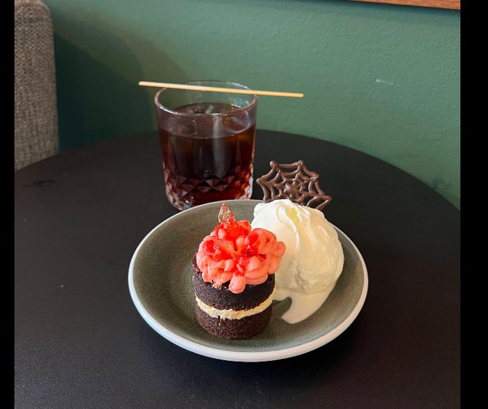

★★★★★
"Que increíble café. Excelente atención, riquísima comida y un maravilloso café de especialidad. Me tomé un espresso, un filtrado V60 de un Ruanda (Red Bourbon) y un sándwich bagel de salmón, exquisito, pan blandito y todo fresco."

Café de especialidad, pasteles recién horneados y opciones veganas y sin lactosa en un rincón verde y acogedor de Santiago Centro.
Petiit Coffee es un rincón verde en Santiago Centro, con vigas de madera, plantas colgantes y una mascota propia (el caracolito de la vitrina) que le da nombre y personalidad al local. Café de especialidad, pastelería de temporada y una carta pensada para quien busca opciones veganas o sin lactosa sin perder sabor.
Además tienen tarjeta de fidelización: acumula y consigue productos gratis.

Está dibujado a mano en el vidrio de la entrada, con su taza y su sombrerito — el mismo motivo de espiral que se repite por todo el local (y por este sitio). Un detalle chico que dice mucho del cariño que le ponen al lugar.




5.0 / 5 · 126 opiniones en Google Maps
"Que increíble café. Excelente atención, riquísima comida y un maravilloso café de especialidad. Me tomé un espresso, un filtrado V60 de un Ruanda (Red Bourbon) y un sándwich bagel de salmón, exquisito, pan blandito y todo fresco."
"Pedí un matcha latte para llevar y el chico me mencionó que no cobran el syrup, me recomendó agregarle coco y quedó maravilloso."
"¿Eres amante del cold brew? Sabemos que es difícil pillar uno de verdad en Santiago, y aquí es uno de los lugares que debes visitar. Si bien no es café de autor ni tostaduría local, destaca por el buen servicio."
Miraflores 328, Santiago Centro
* Número real de la ficha de Google Maps — falta confirmar con el local si tiene WhatsApp activo.